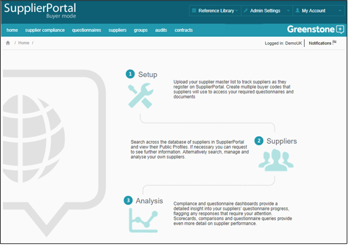

The Home Page comprises a number of elements:
The Reference library contains this user guide and the Supply-Chain Sustainability (SCS) terms and conditions. If you have any issues that are not addressed in here, then there is also an option to contact Cority Support.
In Admin settings you can edit your company details, manage your users, upload documents to share with your Suppliers, and manage your Supplier master list. You can also set up a number of your analytical tools such as groups, labels, scorecards, response flagging, audits and contracts.
